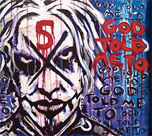

Welcome
From The Ashes is a parent company to Palace of Sorrows recording Studio, and partnered up with Tackleboxxdesigns to provide the best modern day graphics and web work for the people who need it the most.


From The Ashes is a parent company to Palace of Sorrows recording Studio, and partnered up with Tackleboxxdesigns to provide the best modern day graphics and web work for the people who need it the most.

I have been doing graphics for over 8 years, and love every aspect of it. From working in a print shop, or making car wraps, product displays, album covers you name we can make it happen. Let's talk about we can make your dreams a reality.
Dont let the web hold you back on your brand new site. Let me worry about it. From simple single page to a full on coporate site, we can help bring your idea or ideas to life.
Have a band, wedding, or other special event? Let us capture the moment, and bring your event to life. We come, We shoot, and you get the best.